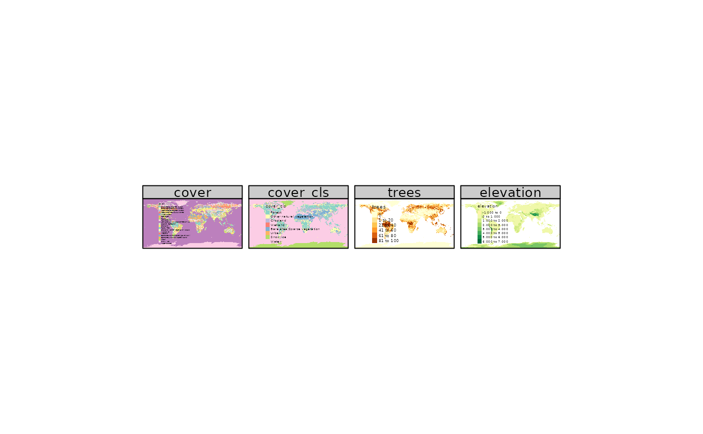
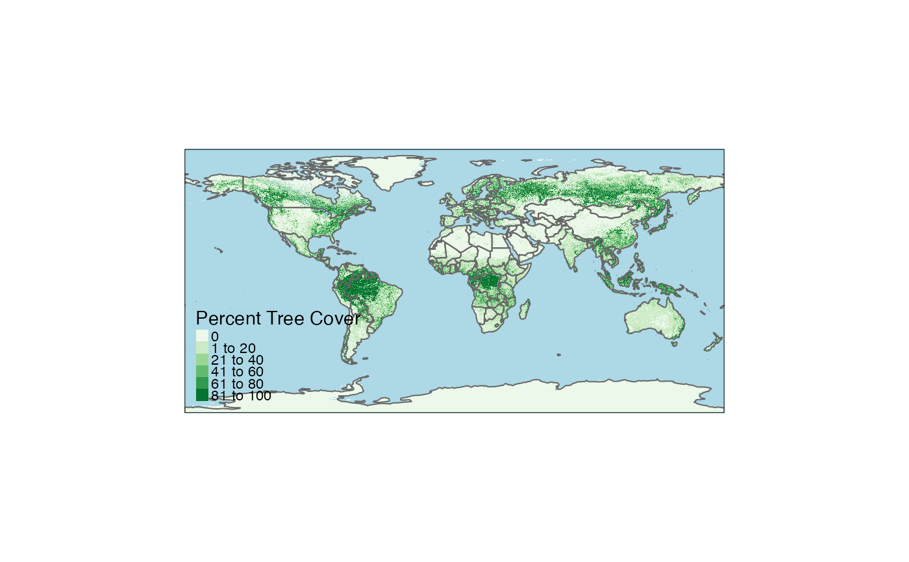

Creates a tmap-element that draws a raster. For coloring, there are three options: 1) a fixed color is used, 2) a color palette is mapped to a data variable, 3) RGB values are used. The function tm_raster is designed for options 1 and 2, while tm_rgb is used for option 3.
Usage
tm_raster(
col = NA,
alpha = NA,
palette = NULL,
n = 5,
style = ifelse(is.null(breaks), "pretty", "fixed"),
style.args = list(),
as.count = NA,
breaks = NULL,
interval.closure = "left",
labels = NULL,
drop.levels = FALSE,
midpoint = NULL,
stretch.palette = TRUE,
contrast = NA,
saturation = 1,
interpolate = NA,
colorNA = NULL,
textNA = "Missing",
showNA = NA,
colorNULL = NULL,
title = NA,
legend.show = TRUE,
legend.format = list(),
legend.is.portrait = TRUE,
legend.reverse = FALSE,
legend.hist = FALSE,
legend.hist.title = NA,
legend.z = NA,
legend.hist.z = NA,
zindex = NA,
group = NA,
auto.palette.mapping = NULL,
max.categories = NULL,
max.value = 255
)
tm_rgb(
r = 1,
g = 2,
b = 3,
alpha = NA,
saturation = 1,
interpolate = TRUE,
max.value = 255,
...
)
tm_rgba(
r = 1,
g = 2,
b = 3,
a = 4,
alpha = NA,
saturation = 1,
interpolate = TRUE,
max.value = 255,
...
)Arguments
- col
three options: the name of a data variable that is contained in
shp, the name of a variable inshpthat contain color values, a single color value. In the first case the values (numeric or categorical) that will be depicted by a color palette (seepalette. If multiple values are specified, small multiples are drawn (see details). By default, it is a vector of the names of all data variables unless thebyargument oftm_facetsis defined (in that case, the default color of dots is taken from the tmap optionaes.color). If the shape (stars object) contains a third dimension, small multiples are created per 3rd dimension value). Note that the number of small multiples is limited bytmap_options("limits")).- alpha
transparency number between 0 (totally transparent) and 1 (not transparent). By default, the alpha value of the
colis used (normally 1).- palette
a palette name or a vector of colors. See
tmaptools::palette_explorer()for the named palettes. Use a"-"as prefix to reverse the palette. The default palette is taken fromtm_layout's argumentaes.palette, which typically depends on the style. The type of palette fromaes.paletteis automatically determined, but can be overwritten: use"seq"for sequential,"div"for diverging, and"cat"for categorical.- n
preferred number of classes (in case
colis a numeric variable)- style
method to process the color scale when
colis a numeric variable. Discrete gradient options are"cat","fixed","sd","equal","pretty","quantile","kmeans","hclust","bclust","fisher","jenks","dpih","headtails", and"log10_pretty". A numeric variable is processed as a categorical variable when using"cat", i.e. each unique value will correspond to a distinct category. For the other discrete gradient options (except"log10_pretty"), see the details inclassIntervals(extra arguments can be passed on viastyle.args). Continuous gradient options are"cont","order", and"log10". The first maps the values ofcolto a smooth gradient, the second maps the order of values ofcolto a smooth gradient, and the third uses a logarithmic transformation. The numeric variable can be either regarded as a continuous variable or a count (integer) variable. Seeas.count.- style.args
arguments passed on to
classIntervals, the function that determine color classes (see alsostyle).- as.count
when
colis a numeric variable, should it be processed as a count variable? For instance, ifstyle = "pretty",n = 2, and the value range of the variable is 0 to 10, then the column classes foras.count = TRUEare 0; 1 to 5; 6 to 10 (note that 0 is regarded as an own category) whereas foras.count = FALSEthey are 0 to 5; 5 to 10. Only applicable ifstyleis"pretty","fixed", or"log10_pretty". By default,TRUEifstyleis one of these, and the variable is an integer.- breaks
in case
style=="fixed", breaks should be specified. Thebreaksargument can also be used whenstyle="cont". In that case, the breaks are mapped evenly to the sequential or diverging color palette.- interval.closure
value that determines whether where the intervals are closed:
"left"or"right". Only applicable ifcolis a numeric variable. Ifas.count = TRUE,inverval.closureis always set to"left".- labels
labels of the classes
- drop.levels
should unused classes be omitted?
FALSEby default.- midpoint
The value mapped to the middle color of a diverging palette. By default it is set to 0 if negative and positive values are present. In that case, the two sides of the color palette are assigned to negative respectively positive values. If all values are positive or all values are negative, then the midpoint is set to
NA, which means that the value that corresponds to the middle color class (seestyle) is mapped to the middle color. Only applies whencolis a numeric variable. If it is specified for sequential color palettes (e.g."Blues"), then this color palette will be treated as a diverging color palette.- stretch.palette
Logical that determines whether the categorical color palette should be stretched if there are more categories than colors. If
TRUE(default), interpolated colors are used (like a rainbow). IfFALSE, the palette is repeated.- contrast
vector of two numbers that determine the range that is used for sequential and diverging palettes (applicable when
auto.palette.mapping=TRUE). Both numbers should be between 0 and 1. The first number determines where the palette begins, and the second number where it ends. For sequential palettes, 0 means the brightest color, and 1 the darkest color. For diverging palettes, 0 means the middle color, and 1 both extremes. If only one number is provided, this number is interpreted as the endpoint (with 0 taken as the start).- saturation
Number that determines how much saturation (also known as chroma) is used:
saturation=0is greyscale andsaturation=1is normal. This saturation value is multiplied by the overall saturation of the map (seetm_layout).- interpolate
Should the raster image be interpolated? By default
FALSEfortm_rasterandTRUEfortm_rgb.- colorNA
color used for missing values. Use
NULLfor transparency.- textNA
text used for missing values.
- showNA
logical that determines whether missing values are named in the legend. By default (
NA), this depends on the presence of missing values.- colorNULL
colour for polygons that are shown on the map that are out of scope
- title
title of the legend element
- legend.show
logical that determines whether the legend is shown
- legend.format
list of formatting options for the legend numbers. Only applicable if
labelsis undefined. Parameters are:- fun
Function to specify the labels. It should take a numeric vector, and should return a character vector of the same size. By default it is not specified. If specified, the list items
scientific,format, anddigits(see below) are not used.- scientific
Should the labels be formatted scientifically? If so, square brackets are used, and the
formatof the numbers is"g". Otherwise,format="f", andtext.separator,text.less.than, andtext.or.moreare used. Also, the numbers are automatically rounded to millions or billions if applicable.- format
By default,
"f", i.e. the standard notationxxx.xxx, is used. Ifscientific=TRUEthen"g", which means that numbers are formatted scientifically, i.e.n.dddE+nnif needed to save space.- digits
Number of digits after the decimal point if
format="f", and the number of significant digits otherwise.- big.num.abbr
Vector that defines whether and which abbrevations are used for large numbers. It is a named numeric vector, where the name indicated the abbreviation, and the number the magnitude (in terms on numbers of zero). Numbers are only abbrevation when they are large enough. Set it to
NAto disable abbrevations. The default isc("mln" = 6, "bln" = 9). For layers wherestyleis set tolog10orlog10_pretty, the default isNA.- prefix
Prefix of each number
- suffix
Suffix of each number
- text.separator
Character string to use to separate numbers in the legend (default: "to").
- text.less.than
Character value(s) to use to translate "Less than". When a character vector of length 2 is specified, one for each word, these words are aligned when
text.to.columns = TRUE- text.or.more
Character value(s) to use to translate "or more". When a character vector of length 2 is specified, one for each word, these words are aligned when
text.to.columns = TRUE- text.align
Value that determines how the numbers are aligned,
"left","center"or"right". By default"left"for legends in portrait format (legend.is.protrait = TRUE), and"center"otherwise.- text.to.columns
Logical that determines whether the text is aligned to three columns (from, text.separator, to). By default
FALSE.- html.escape
Logical that determins whther HTML code is escaped in the popups in view mode. By default
TRUE. If set toFALSEHTML code can be added, e.g. to added white space via .- ...
Other arguments passed on to
formatC
- legend.is.portrait
logical that determines whether the legend is in portrait mode (
TRUE) or landscape (FALSE)- legend.reverse
logical that determines whether the items of the legend regarding the text sizes are shown in reverse order, i.e. from bottom to top when
legend.is.portrait = TRUEand from right to left whenlegend.is.portrait = FALSE- legend.hist
logical that determines whether a histogram is shown
- legend.hist.title
title for the histogram. By default, one title is used for both the histogram and the normal legend.
- legend.z
index value that determines the position of the legend element with respect to other legend elements. The legend elements are stacked according to their z values. The legend element with the lowest z value is placed on top.
- legend.hist.z
index value that determines the position of the histogram legend element
- zindex
zindex of the pane in view mode. By default, it is set to the layer number plus 400. By default, the tmap layers will therefore be placed in the custom panes
"tmap401","tmap402", etc., except for the base tile layers, which are placed in the standard"tile". This parameter determines both the name of the pane and the z-index, which determines the pane order from bottom to top. For instance, ifzindexis set to 500, the pane will be named"tmap500".- group
name of the group to which this layer belongs in view mode. Each group can be selected or deselected in the layer control item. Set
group = NULLto hide the layer in the layer control item. By default, it will be set to the name of the shape (specified intm_shape).- auto.palette.mapping
deprecated. It has been replaced by
midpointfor numeric variables andstretch.palettefor categorical variables.- max.categories
deprecated. It has moved to
tmap_options.- max.value
for
tm_rgb, what is the maximum value per layer? By default 255.- r
raster band for the red channel. It should be an integer between 1 and the number of raster layers.
- g
raster band for the green channel. It should be an integer between 1 and the number of raster layers.
- b
raster band for the blue channel. It should be an integer between 1 and the number of raster layers.
- ...
arguments passed on from
tm_rgbandtm_rgbatotm_raster.- a
raster band for the alpha channel. It should be an integer between 1 and the number of raster layers.
Details
Small multiples can be drawn in two ways: either by specifying the by argument in tm_facets, or by defining multiple variables in the aesthetic arguments. The aesthetic argument of tm_raster is col. In the latter case, the arguments, except for the ones starting with legend., can be specified for small multiples as follows. If the argument normally only takes a single value, such as n, then a vector of those values can be specified, one for each small multiple. If the argument normally can take a vector, such as palette, then a list of those vectors (or values) can be specified, one for each small multiple.
References
Tennekes, M., 2018, tmap: Thematic Maps in R, Journal of Statistical Software, 84(6), 1-39, doi:10.18637/jss.v084.i06
Examples
data(World, land, metro)
pal8 <- c("#33A02C", "#B2DF8A", "#FDBF6F", "#1F78B4", "#999999", "#E31A1C", "#E6E6E6", "#A6CEE3")
tm_shape(land, ylim = c(-88,88)) +
tm_raster("cover_cls", palette = pal8, title = "Global Land Cover") +
tm_shape(metro) + tm_dots(col = "#E31A1C") +
tm_shape(World) +
tm_borders(col = "black") +
tm_layout(scale = .8,
legend.position = c("left","bottom"),
legend.bg.color = "white", legend.bg.alpha = .2,
legend.frame = "gray50")
#> old-style crs object detected; please recreate object with a recent sf::st_crs()
#> old-style crs object detected; please recreate object with a recent sf::st_crs()
#> old-style crs object detected; please recreate object with a recent sf::st_crs()

if (FALSE) {
pal20 <- c("#003200", "#3C9600", "#006E00", "#556E19", "#00C800", "#8CBE8C",
"#467864", "#B4E664", "#9BC832", "#EBFF64", "#F06432", "#9132E6",
"#E664E6", "#9B82E6", "#B4FEF0", "#646464", "#C8C8C8", "#FF0000",
"#FFFFFF", "#5ADCDC")
tm_shape(land) +
tm_raster("cover", palette = pal20, title = "Global Land Cover") +
tm_layout(scale=.8, legend.position = c("left","bottom"))
}
tm_shape(land, ylim = c(-88,88)) +
tm_raster("trees", palette = "Greens", title = "Percent Tree Cover") +
tm_shape(World) +
tm_borders() +
tm_layout(legend.position = c("left", "bottom"), bg.color = "lightblue")

if (FALSE) {
tm_shape(land) +
tm_raster("black") +
tm_facets(by="cover_cls")
}
# TIP: check out these examples in view mode, enabled with tmap_mode("view")